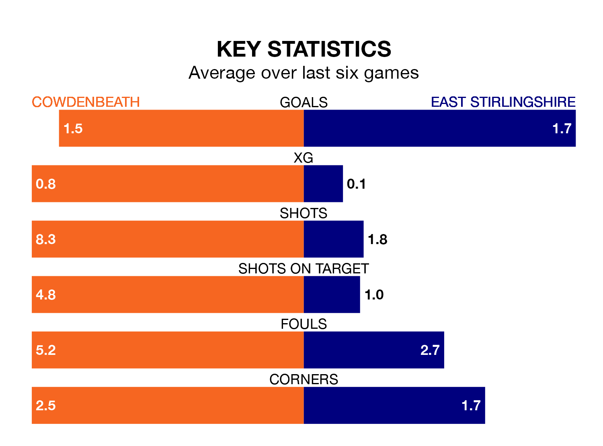

Struggling East Stirlingshire face Cowdenbeath away at Central Park on Saturday looking to build on a win in their last league outing.
After securing all three points with a 4-3 victory over Tranent Juniors on Tuesday, the Shire sit 15th in the Lowland Football League.
They travel to play a Cowdenbeath side 12th in the standings, who lost in their last match, 4-1 against Berwick Rangers, on March 16.
With 45 goals in 30 games so far this season, East Stirlingshire are scoring at below the league average rate with 1.5 goals per game. And they are conceding more than average, letting in 55 goals at a rate of 1.8 per game.
Cowdenbeath are also below average scorers, with 1.6 goals per game, compared to a league average of 1.7. They have also conceded 1.6 goals per game.
The hosts are in mixed form in the Lowland Football League, with three wins and a draw from their last six games.
With four wins and two losses over that period, the Shire's form is slightly better – they have taken 12 points from 18, compared to Cowdenbeath's 10.
In the last three years, Cowdenbeath and East Stirlingshire have played each other on three occasions. Cowdenbeath won two of them and they drew once.
Their last meeting was on December 26, when Cowdenbeath won 3-2 away.
Updated: 10:19 (UTC), 22/03/24